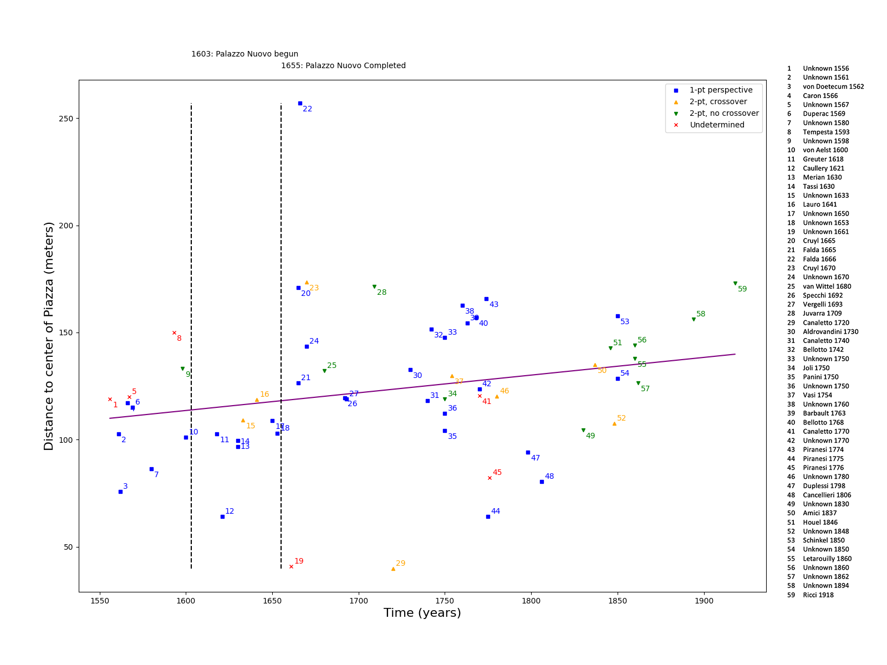
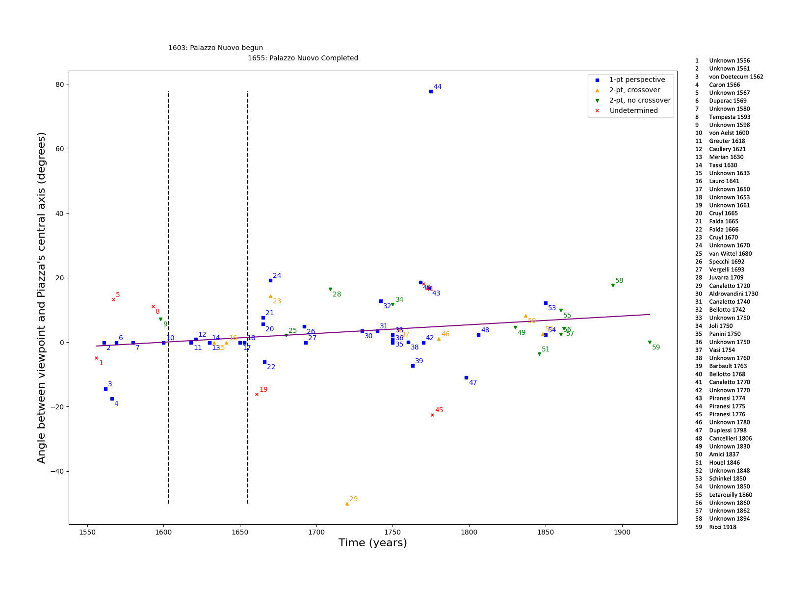
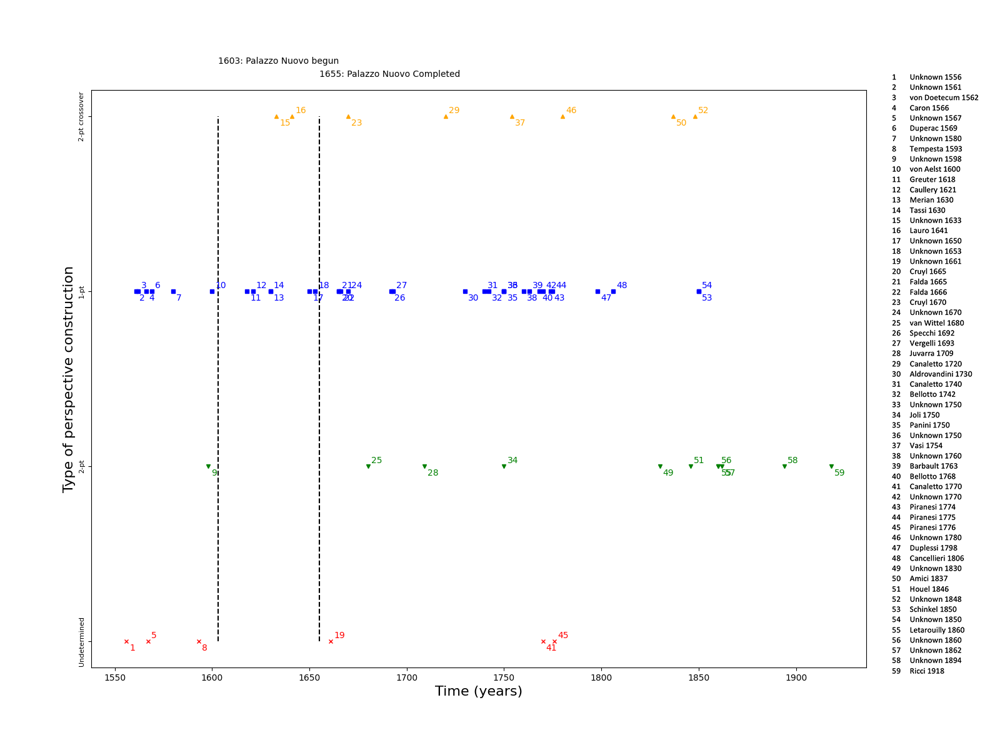

|
Digital Analysis of Linear Perspective Views of the Campidoglio in Rome:
Extracting the Artist’s Viewpoint using Camera Resectioning
Linear perspective is a drawing technique that was discovered by Filippo Brunelleschi in Florence sometime in the early years of the 15th century. It was thereafter widely used throughout Europe to effectively portray 3D space in paintings, drawings, and prints before the invention of photography in the 19th century. Existing literature on linear perspective in Renaissance and early modern art is vast and extends as far back as the early 20th century; but most of the scholarship has overlooked the fact that the use of linear perspective to portray and document real spaces often alters the appearance of those spaces.
In 21st century scholarship, the art historian is no longer limited to working only with the objects that they happen to find before them in a single museum or archive. Online databases are becoming increasingly available and the number of digitized drawings and paintings continues to grow, yet we are still largely in need of ways in which to wrangle all this digitized visual and historical information with non-traditional, digital methods.
My project takes a first step toward digitally analyzing an entire set of paintings and drawings that use linear perspective in order to understand how the technique discovered by Brunelleschi has had lasting effects on how real space was perceived and portrayed over time. My project presents to broader art historical and digital humanities scholarship a way in which digital methods can be used to extract information from paintings and drawings which the human eye cannot readily perceive, such as the viewpoint taken by the artist in real space, and further illuminate trends in the history of art that exist within a large set of images and which would otherwise pass unnoticed by historians.
The example I focused on in my summer research is the Piazza del Campidoglio in Rome and a set of about 60 drawings, paintings and prints of the Campidoglio that I identified in the first phase of my project.
I completed preliminary research about the Piazza del Campidoglio—its urban history and its importance within the history of painting and print making in the early modern period. This allowed me to identify key historical events which may have influenced how the Campidoglio might be portrayed by artists as time went on, such as Michelangelo’s redesigning of the Piazza in the 1530s and the eventual completion of the Palazzo Nuovo in 1655 (one of the two identical palaces flanking the Piazza, which did not exist before Michelangelo’s redesign and was added to complete the symmetry of his new plan). I also searched various online archives for digitized paintings and drawings that would make up the body of my primary evidence. I located 66 images total between 1550 and 1950, and used 59 in my final analyses, excluding any images which may have been versions of the same drawing by a single artist.
Sample of various paintings, drawings, and prints depicting the Piazza del Campidoglio.
I traveled to Rome during the second phase of my project to obtain a 3D model of the Campidoglio using only a DSLR camera as my hardware equipment. With multiple sets of images, I could produce several 3D models of the Piazza using photogrammetry—a method for reconstructing the 3D shape of an object using many photos taken of that object from all around. The photogrammetry software I used to construct my models was Agisoft Metashape (Standard edition, version 1.8.3).
|
|
I obtained multiple 3D models over the course of a week of returning to the Piazza del Campidoglio to capture images of the square. The images were captured around midday and my final model used 140 images captured on a Canon EOS Rebel T3i at 18mm.

|
View of the model’s dense point cloud showing the location and orientation of every photo used to construct the model.
In my third phase, I used the 3D model and the digitized historical images I collected to estimate the position in 3D space at which each artist would have portrayed the Campidoglio. To compute the estimated positions, I used a well-known computer vision technique called “camera calibration” or “camera resectioning,” which computes the original camera position given a handful of known 2D-3D point correspondences between the photograph (containing the 2D points) and the real-world scene (containing 3D points).
The greatest problem with applying camera resectioning to hand-drawn images is that the Campidoglio as depicted by the artist and the real Campidoglio are not isometric—the artist may have skewed the proportions of the buildings, they might have used one vanishing point when photographs of buildings typically contain three, and so on. I found that camera resectioning could still produce an approximation of the artist’s viewpoint that matches what we would expect when looking at their picture, so long as I chose my point correspondences carefully and treated each painting and drawing as if it were a photograph taken from the same camera.
For consistency, I used my own DSLR camera settings in the camera resectioning algorithm, meaning I also had to crop and scale every sample image (the digitized paintings and drawings) to match the sensor dimensions on my camera (5184 x 3456 pixels). I then needed to produce the 2D-3D point correspondences using the processed sample images and my 3D model. On my 3D model, I marked the key points that appear in most paintings and drawings of the Campidoglio, such as the corners of the palaces, and saved the 3D coordinates of these points. Then, to obtain point correspondences with the historical images, I used a script that allowed me to manually identify the 2D location of those key points on each image and store all of the point correspondences in a data file.
Visualization of how 2D positions were collected on a cropped image (Anonymous, View of the Capitoline Hill during Michelangelo's restoration, ca. 1561-3). Each code (PSUL, PSUR, …) is used to match the 2D points from this image to the corresponding points on the 3D model. To estimate the artist’s position, only 4-10 point correspondences were needed, with an ideal number of 6-8. Using too may or too few might result in an erroneous estimate for the artist’s position.

|
Visualization of the total set of 3D points used for creating 2D-3D correspondences, comprising of principal features in the scene (corners, edges, and midpoints of buildings and select statues) that are present in most depictions of the Campidoglio.
I wrote further code to compute the estimated 3D position of each artist and plot these positions back onto my 3D model based on the gathered point correspondences. I used OpenCV’s Python function “solvePnP” to compute the estimated positions given the 2D-3D correspondences. A few sample images and their estimated viewpoint locations are shown below:
|
|
|
|
Visualization of the estimated position of the artists of each of the three images above.
The estimated positions of each artist which I obtained using the camera resectioning method by no means represent the exact location at which an artist made their picture of the Campidoglio. In fact, most of the artists constructed their views from the studio, fabricating viewpoints that in real life might lie high in the sky (Dupérac 1569) or in a location that is obstructed from a clear view of the Piazza (Caullery 1561). Instead, the estimated positions I obtained are meant to place the paintings and drawings in relation to one another according to the spatial construction used by each artist. This is enough to meaningfully observe changes in how artists went about constructing space in their pictures over time.
3D model of the Campidoglio with estimated viewpoints of all 59 analyzed paintings, drawings, and prints. Arranged chronologically by number (1 being earliest and 59 being latest) and color (reds being earliest and greens/blues being latest).
Frontal view of the above model.
Left-side view of the above model.
Top-down view of the above model.
With the estimated positions, I could extract various quantities that changed over time, such as the height of the artist’s position, which corresponds to how high the artist placed their vanishing point in their linear perspective construction, or the angle between the artist and the axis of symmetry of the Campidoglio, indicating whether the artist placed their scene and vanishing point centrally within the drawing surface or assumed an oblique viewpoint to the right or left. These quantities allow one to understand how the viewpoint taken by each artist evolved over time, generating further questions as to what stylistic, historical, social, or other changes might account for these trends.
In the following plots, I mark each painting and drawing analyzed by a point distinguishing between the type of linear perspective construction used:
|
|
|
|
|
|
Height of the viewpoint over time.
The height of the viewpoint in 3D space corresponds to how high the artist placed their vanishing point and horizon line when constructing their picture (higher viewpoints indicating higher vanishing point placement).
|  |
Distance between viewpoint and center of the Piazza, defined as the location of the statue of Marcus Aurelius.
|  |
Angle between the viewpoint and the Piazza’s central axis of symmetry over time.
This angle corresponds to how far to the left or right of the Piazza’s central axis the artist placed their own viewpoint and inversely the vanishing point(s) use to construct the scene. For example, a negative value indicates that the picture looks at the Piazza from the left (the side of Santa Maria in Aracoeli) and the vanishing point will lie to the right of the central axis of symmetry). A 0 value indicates that the picture’s vanishing point lies on the line of symmetry of the Piazza, centering the viewpoint horizontally, as in Dupèrac, 1569.
|  |
Type of linear perspective construction used over time (see categories explained above).